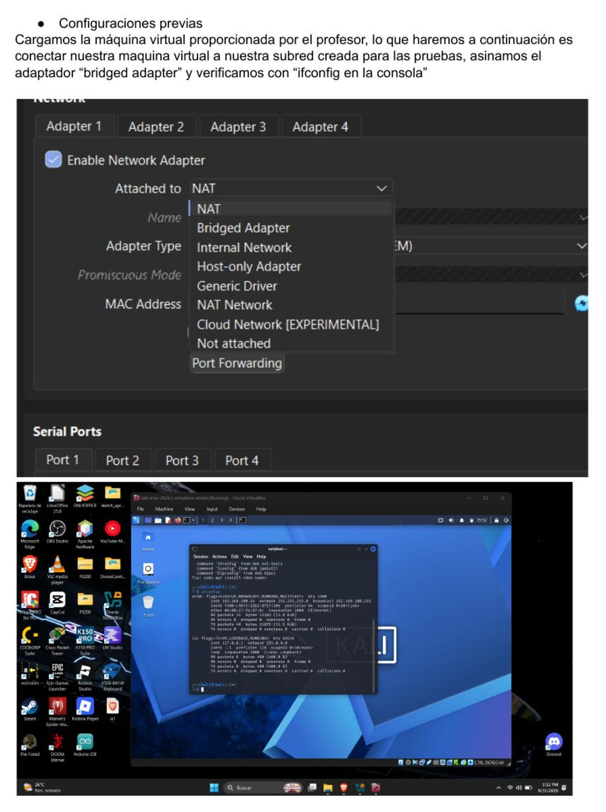
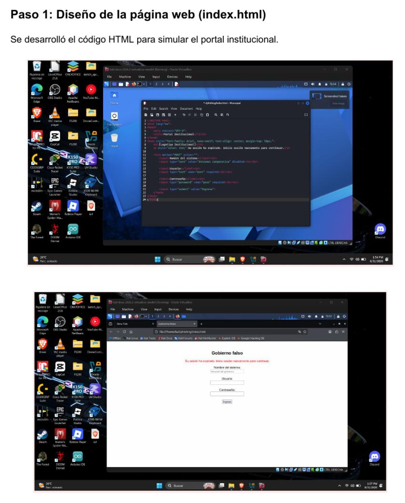
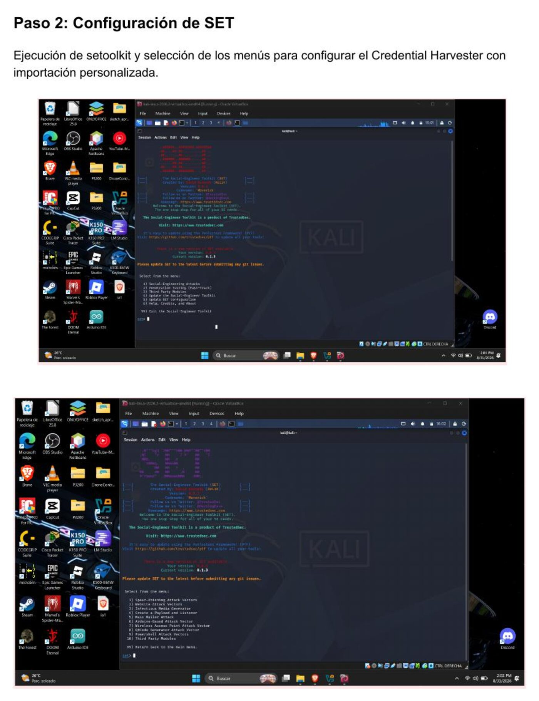
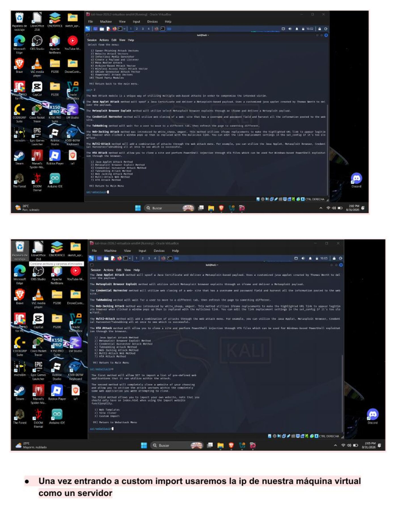
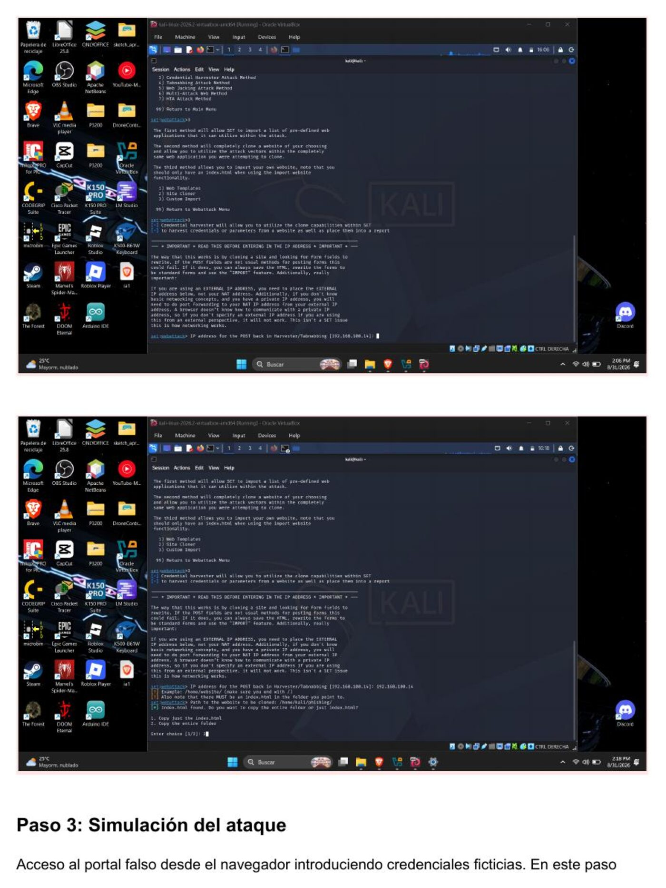
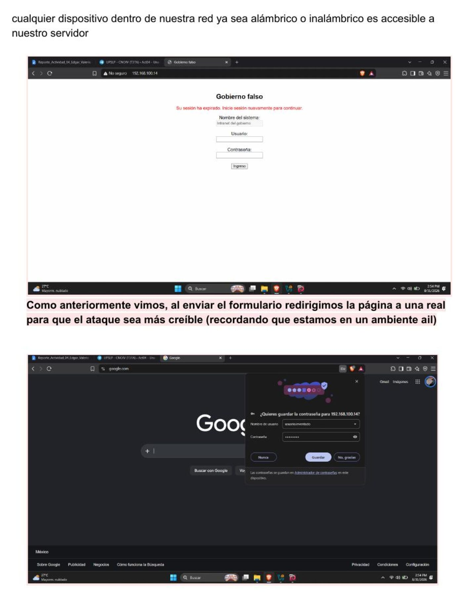
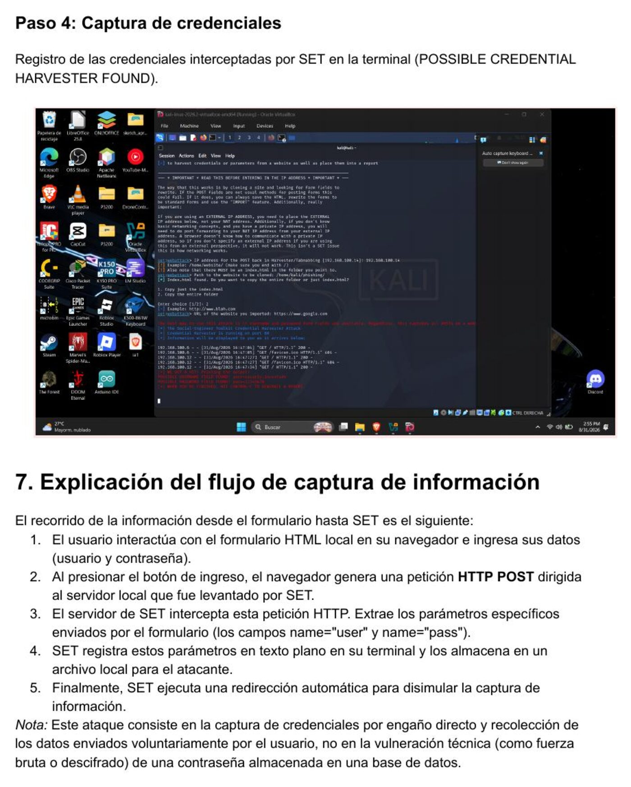

Parcial I — Tarea 4
Una página demasiado convincente
CNO IV — Seguridad Informática · UPSLP · 31 de agosto de 2026
Objetivo
Implementar y analizar, en un entorno de laboratorio controlado, una simulación de ingeniería social mediante Social-Engineer Toolkit (SET), utilizando una página web ficticia para comprender el funcionamiento de una técnica de captura de información y reconocer los elementos que permiten identificar un intento de phishing.
Descripción del escenario
El área de seguridad informática de una organización recibe reportes de empleados que aseguran haber recibido un mensaje sobre una supuesta actualización de sus credenciales, con un enlace hacia un portal aparentemente institucional. La página incluye logotipo, campos de usuario y contraseña, y un aviso de sesión expirada. A primera vista nada parece fuera de lo común, pero el portal no pertenece a la organización.
¿Qué es un Credential Harvester?
Es un vector de ataque de ingeniería social que despliega un servidor web malicioso diseñado para interceptar y almacenar datos confidenciales introducidos por una víctima engañada, para después redirigirla al sitio legítimo o mostrar un error genérico y no levantar sospechas.
Configuración del laboratorio
La simulación se realizó en Kali Linux. Se preparó un archivo HTML local que simula un portal de autenticación básico y se utilizó Social-Engineer Toolkit (SET), módulo Credential Harvester Attack Method, con la opción Custom Import para cargar la página desarrollada y levantar el servidor de escucha en la dirección IP local de la máquina virtual.

Evidencias y funcionamiento
Paso 1 — Diseño de la página web
Se desarrolló el HTML que simula el portal institucional ("Gobierno falso").

Paso 2 — Configuración de SET
Ejecución de setoolkit y selección de los menús para configurar el Credential Harvester con importación personalizada.



Paso 3 — Simulación del ataque
Acceso al portal falso desde el navegador introduciendo credenciales ficticias. Cualquier dispositivo dentro de la red, alámbrico o inalámbrico, puede acceder al servidor. Al enviar el formulario, la página redirige a un sitio real para que el engaño resulte más creíble.

Paso 4 — Captura de credenciales
Registro de las credenciales interceptadas por SET en la terminal (POSSIBLE CREDENTIAL HARVESTER FOUND).

Flujo de captura de información
- El usuario interactúa con el formulario HTML local en su navegador e ingresa sus datos (usuario y contraseña).
- Al presionar el botón de ingreso, el navegador genera una petición HTTP POST dirigida al servidor local levantado por SET.
- El servidor de SET intercepta esta petición y extrae los parámetros enviados por el formulario.
- SET registra estos parámetros en texto plano en su terminal y los almacena en un archivo local.
- Finalmente, SET ejecuta una redirección automática para disimular la captura de información.
Nota: este ataque consiste en la captura de credenciales por engaño directo y recolección de datos enviados voluntariamente por el usuario, no en la vulneración técnica de una contraseña almacenada en una base de datos.
Indicadores técnicos y visuales de phishing
- URL sospechosa: dirección IP cruda o dominio con errores tipográficos que simula ser el legítimo.
- Falta de cifrado: ausencia de certificado TLS/SSL, el navegador marca "No seguro".
- Tono coercitivo: mensajes de urgencia que obligan a actuar de inmediato.
- Diseño visual inconsistente: elementos genéricos o tipografía que no corresponde a la imagen corporativa real.
- Redirecciones anómalas: enlaces internos que no llevan a ningún sitio o solo recargan la misma página.
Controles de seguridad propuestos
- Autenticación multifactor (MFA): mitiga el impacto de credenciales robadas al requerir un segundo factor; no evita el engaño inicial, pero inutiliza el acceso sin él.
- Gestores de contraseñas corporativos: se niegan a autocompletar si la URL no coincide exactamente con el dominio oficial registrado.
- Filtros anti-phishing en correo: bloquean correos con enlaces hacia IPs directas o dominios de baja reputación.
- Monitoreo de tráfico perimetral: detecta conexiones anómalas hacia IPs no autorizadas para alojar portales de autenticación.
- Capacitación en Security Awareness: entrena al personal para identificar señales de fraude; es el control fundamental a nivel usuario.
Conclusión
Esta simulación evidenció la facilidad y rapidez con la que se puede montar un escenario de ingeniería social persuasivo con Social-Engineer Toolkit (SET). Ver en tiempo real cómo se interceptan credenciales en texto plano confirma que el eslabón más débil en ciberseguridad sigue siendo el factor humano. Más allá de una infraestructura robusta, es indispensable la concientización continua de los usuarios (Security Awareness) junto con medidas complementarias como MFA para mitigar los riesgos de phishing orientados a comprometer el acceso institucional.
Informe completo
Documento con el análisis completo, todas las evidencias y el detalle paso a paso de la actividad.
Descargar informe (PDF)